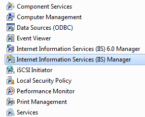
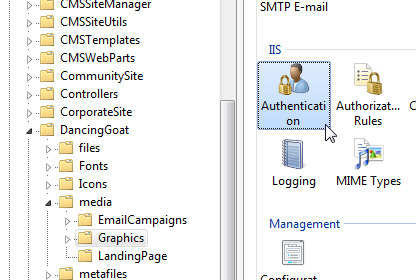
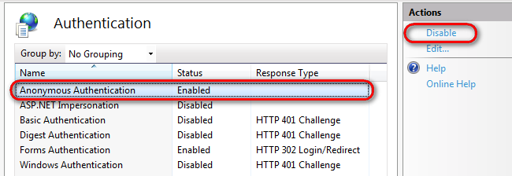
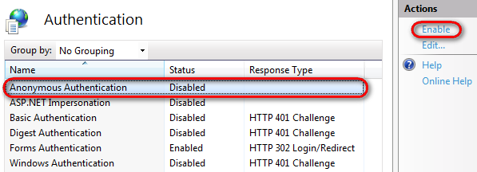

Securing media libraries
Media libraries on your site can be secured or unsecured. To ensure the required functionality, several settings need to be done as described below.
By default, files in media libraries are NOT secured and can be accessed directly by anybody who knows the exact link to the file. If you want to prevent this behavior, secure your media library as described in this topic.
Setting up a secured media library
Secured media libraries allow viewing of their content to members of authorized roles or to authenticated users only. Keep in mind that secured media libraries are slower than the unsecured ones as permission checking involves processing overhead.
IIS settings
You have to set up your IIS so that files can't be downloaded directly from the library by typing the link to the file like <site url>/media/file.jpg into the browser.
To open IIS, navigate to Start -> Control Panel -> Administrative Tools and start the Internet Information Services (IIS) Manager.

Opening IISIn the connections pane, select the application for which you want to change the settings.
Navigate to the folder of your application for which you want to want to change the settings. You can find individual media library folder under <site name>/media.
In the Features View, double-click on Authentication.
Select Anonymous Authentication.
In the Actions list, click on Disable.

Disabling IIS anonymous authentication(Optional) If Windows Authentication is enabled as well, disable it.
Media library security settings
Once you changed the settings in IIS, you need to make changes in Kentico as well.
Changing security settings for a particular media library
Open the Media libraries application.
Edit (
 ) the Media library for which you want to set the permissions.
) the Media library for which you want to set the permissions.Switch to the Security tab.
Assign the See library content permission to Authenticated users or to Authorized roles.
(Optional) If you assigned the permission to Authorized roles, turn the See library content check-box on for the roles which you want to allow to see the library content.
By default, Kentico doesn't check for the See library content permission. To make the system check for the permission, you need to turn on the Check file permissions option as described below.
Changing check file permissions settings
Open the Settings application.
Switch to Content -> Media.
In the Security settings group, select Check file permissions.
Save the changes.
Media gallery web part settings
In the Pages application, navigate to the page on which you use the Media gallery web part.
Switch to the Design tab.
Configure the web part.
In the Content category, enable the Use secure links property.
Click Save & Close.
Writing transformations for the Media gallery web part
When writing your transformations for the Media gallery web part:
Obtain File previews and file details using the following control:
<cc1:MediaFilePreview ID="filePreview"runat="server"maxsidesize="117"/>Obtain Download links using the following method:
<%# MediaLibraryFunctions.GetMediaFileUrl(Eval("FileLibraryID") ,Eval("FilePath"), Eval("FileGUID"), Eval("FileName"), GetDataControlValue<bool>("UseSecureLinks")) %>
You can see an example of a use of this web part, including the defined transformations, on the Community Site sample website, in the Media section.
Using the settings above, you can ensure that only members of authorized roles or authenticated users are allowed to view media library content.
Setting up a unsecured media library
Secured media libraries allow viewing of their content to members of authorized roles or to authenticated users only. Keep in mind that secured media libraries are slower than the non-secured ones as permission checking involves processing overhead.
IIS settings
You have to set up your IIS so that files can be downloaded directly from the library by typing the link to the file like <site url>/media/file.jpg into the browser.
To open IIS, navigate to Start -> Control Panel -> Administrative Tools and start the Internet Information Services (IIS) Manager.
Opening IISIn the connections pane, select the application for which you want to change the settings.
Navigate to the folder of your application for which you want to want to change the settings. You can find individual media library folder under <site name>/media.
In the Features View, double-click on Authentication.
Select Anonymous Authentication.
In the Actions list, click on Enable.

Enabling IIS anonymous authentication(Optional) If you disabled Windows authentication in order to secure your media libraries previously, you can now enable it.
Media library security settings
Once you changed the settings in IIS, you need to make changes in Kentico as well.
Changing security settings for a particular media library
Note that if you want to change the settings temporarily and then revert back to the secured mode, you can simply turn checking file permissions off.
Open the Media libraries application.
Edit (
) the Media library for which you want to set the permissions.Switch to the Security tab.
Assign the See library content permission to All users.
Changing check file permissions settings
Open the Settings application.
Switch to Content -> Media.
In the Security settings group, deselect Check file permissions.
Save the changes.
Media gallery web part settings
In the Pages application, navigate to the page on which you use the Media gallery web part.
Switch to the Design tab.
Configure the web part.
In the Content section, disable the Use secure links property.
Click Save & Close.
Writing transformations for the Media gallery web part
When writing your transformations for the Media gallery web part:
Obtain File previews and file details using the following control:
<cc1:MediaFilePreview ID="filePreview"runat="server"maxsidesize="117"/>You can obtain other file type previews, details and download links directly.